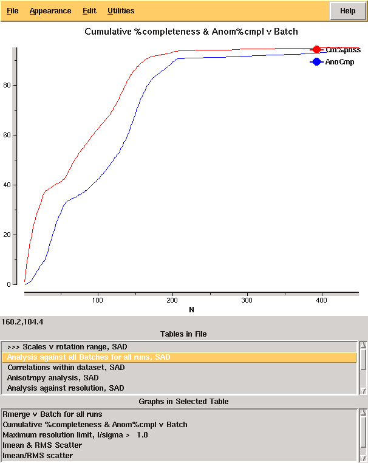

Introductory example¶
The most straightforward way to discuss the operation of the program is through demonstrations with real examples. The first of these is a dataset from a DNA / ligand complex recorded at Diamond Light Source as part of ongoing research. The structure includes barium which may be used for phasing, and the data were recorded as a single sweep. As may be seen from Figure 2, the quality of diffraction was not ideal, and radiation damage was an issue. Initially the data were processed with:
xia2 -3d -atom Ba /here/are/my/data
giving the merging statistics shown below:
High resolution limit 1.25 6.45 1.25 Low resolution limit 18.85 18.85 1.27 Completeness 95.2 60.1 70.2 Multiplicity 12.2 8.4 4.8 I/sigma 12.3 18.5 2.6 Rmerge 0.113 0.096 0.564 Rmeas(I) 0.129 0.118 0.633 Rmeas(I+/-) 0.121 0.105 0.679 Rpim(I) 0.034 0.038 0.267 Rpim(I+/-) 0.043 0.041 0.368 Wilson B factor 12.131 Anomalous completeness 93.3 52.6 58.0 Anomalous multiplicity 6.4 5.0 2.0 Anomalous correlation 0.544 0.791 -0.297 Anomalous slope 1.085 0.000 0.000 Total observations 118588 529 1634 Total unique 9749 63 337
From these it is clear that there is something wrong: it is very unusual to have near atomic resolution diffraction with ∼10% Rmerge in the low resolution bin. The most likely reasons are incorrect assignment of the pointgroup and radiation damage - the latter of which is clear from the analysis of Rmerge as a function of image number:

From the cumulative completeness as a function of frame number it is clear that the data were essentially complete after approximately 200 frames, though the low resolution completeness is poor:
Modifying input¶
From the example it would seem sensible to investigate processing only the first 200 of the 450 images. While it is usual to limit the batch range in scaling when processing the data manually, xia2 is not set up to work like this as decisions made for the full data set (e.g. scaling model to use) may differ from those for the subset - we therefore need to rerun the whole xia2 job after modifying the input. All that is necessary is to adjust the image range (START END) to get the modified input file shown below:
BEGIN PROJECT AUTOMATIC
BEGIN CRYSTAL DEFAULT
BEGIN HA_INFO
ATOM Ba
END HA_INFO
BEGIN WAVELENGTH SAD
WAVELENGTH 0.979500
END WAVELENGTH SAD
BEGIN SWEEP SWEEP1
WAVELENGTH SAD
DIRECTORY /dls/i02/data/2011/mx1234-5
IMAGE K5_M1S3_3_001.img
START_END 1 200 ! THIS WAS 450
END SWEEP SWEEP1
END CRYSTAL DEFAULT
END PROJECT AUTOMATIC
and rerun as:
xia2 -3d -xinfo modified.xinfo
giving the following merging statistics:
High resolution limit 1.22 6.34 1.22 Low resolution limit 19.62 19.62 1.24 Completeness 86.9 49.1 37.8 Multiplicity 5.3 4.9 1.7 I/sigma 20.1 37.0 2.3 Rmerge 0.036 0.020 0.355 Rmeas(I) 0.060 0.038 0.448 Rmeas(I+/-) 0.043 0.023 0.491 Rpim(I) 0.023 0.014 0.297 Rpim(I+/-) 0.022 0.011 0.339 Wilson B factor 10.70 Anomalous completeness 77.7 41.0 18.3 Anomalous multiplicity 2.7 3.5 0.5 Anomalous correlation 0.779 0.931 0.000 Anomalous slope 1.553 0.000 0.000 Total observations 50875 272 342 Total unique 9552 55 199
These are clearly much more internally consistent and give nice results from experimental phasing though with very poor low resolution completeness. At the same time we may wish to adjust the resolution limits to give more complete data in the outer shell, which may be achieved by adding a RESOLUTION instruction to either the SWEEP or WAVELENGTH block.